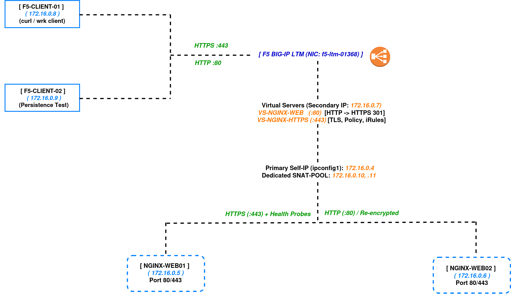

Lab Topology & Traffic Flow Architecture
Production Azure VNet deployment with multi-IP NIC binding, virtual server VIPs, dedicated egress SNAT pools, and dual Ubuntu NGINX backend nodes.

Figure 1: Full packet flow showing client-side TLS termination, TMM kernel evaluation, SNAT pool address translation, and NGINX pool member load balancing.
| Node / Object | IP Address | Interface / Azure NIC | Role in Architecture |
|---|---|---|---|
| F5-CLIENT-01 | 172.16.0.8 |
Primary NIC | Primary client for curl, wrk benchmarks, and attack/rate-limit simulations |
| F5-CLIENT-02 | 172.16.0.9 |
Secondary Client | Concurrent client for multi-client Source Address Persistence verification |
| VS-NGINX-WEB / HTTPS | 172.16.0.7 |
Secondary Static NIC IP | Shared Virtual Server VIP (TCP/80 and TCP/443) |
| F5 BIG-IP Self-IP | 172.16.0.4 |
Primary NIC + PIP | Management (8443/SSH), active health probes, baseline Auto Map |
| SNAT-POOL (SNAT-1/2) | 172.16.0.10, 172.16.0.11 |
Secondary Static NIC IPs | Dedicated application egress SNAT pool isolating Self-IP 172.16.0.4 |
| NGINX-WEB01 | 172.16.0.5 |
Backend NIC | Backend App Node 1 (POOL-WEB01, POOL-NGINX-WEB, POOL-APP1-HTTPS) |
| NGINX-WEB02 | 172.16.0.6 |
Backend NIC | Backend App Node 2 (POOL-WEB02, POOL-NGINX-WEB, POOL-APP2-HTTPS) |
12-Module Master Implementation
Comprehensive implementation matrix spanning SSL offloading, dynamic load balancing, high availability, L7 security controls, and TMOS telemetry.
TLS Offloading
SSL Termination (HTTPS Offloading)
- Client-side TLS 1.3 termination utilizing custom CLIENTSSL-F5-LAB certificate profile
- Offloaded cryptographic decryption overhead saving backend server CPU cycles
- Decrypted traffic forwarded as plaintext HTTP/1.1 across pool nodes with SNAT translation
- Wireshark capture verified TLS 1.3 client leg vs cleartext HTTP backend payload
End-to-End Encryption
SSL Bridging (End-to-End TLS)
- Terminated client TLS at BIG-IP edge to enable deep Layer 7 payload inspection
- Re-encrypted payload via SERVERSSL-NGINX-LAB establishing independent backend TLS 1.2 session
- Active HTTPS health monitor (MON-NGINX-HTTPS) polling backend nodes on port 443
- Verified full internal data-in-transit security complying with enterprise audit mandates
Edge Redirection
HTTP-to-HTTPS Redirection
- RFC-compliant 301 Moved Permanently response synthesized directly in TMOS microkernel (TMM)
- Ultra-fast turnaround latency benchmarked at just 110 µs (0.000110s) with zero backend hits
- Preserved full client host context and requested URI path across redirection flow
- Wireshark packet capture confirmed edge response synthesis on tmm0 without server packets
Content Switching
Layer 7 Host-Based Routing
- Multi-tenant content switching routing app1 and app2 subdomains on a single shared VIP
- High-performance iRule parsing decrypted TLS 1.3 Host headers with only 47.6K CPU cycles
- Complete blast-radius isolation: simulated outage in App1 caused zero disruption to App2
- Eliminated need for redundant public IP allocations and distinct virtual servers
High Availability
HTTP Health Monitoring & Failover
- Custom L7 HTTP health monitor (MON-NGINX-HTTP) configured with 5s interval and 16s timeout
- Simulated backend outage: stopped NGINX on WEB01 with automated pool eviction in ≤16s
- Active wrk benchmark sustained 266,212 requests @ 4,435.49 req/s with zero connect errors
- 100% traffic shifted seamlessly to surviving node WEB02 with automatic restoration on recovery
Dynamic Balancing
Least Connections Load Balancing
- Dynamic socket balancing evaluating live active connections rather than static ratios
- Pre-skewed WEB02 with 7.54M background requests to prove connection count priority
- Balanced 1,000 concurrent sockets to near-perfect 501 vs 499 active socket equilibrium
- Instant failover demonstration: shifted 995 active connections without dropping client sessions
Session Affinity
Source Address Persistence
- Layer 4 client IP affinity profile (PERSIST-SOURCE-IP) with 180-second sliding timeout
- Dual independent client verification: Client 1 pinned to WEB02 while Client 2 pinned to WEB01
- Persistence record table verified in real-time via tmsh show ltm persistence records
- Maintained connection stickiness across multiple sequential curl and browser transactions
Application Stickiness
HTTP Cookie Insert Persistence
- Stateless client session stickiness injecting encrypted BIG-IP cookies into HTTP responses
- 100 consecutive requests delivered 100% session stickiness to designated backend node
- Decoded BIGipServer cookie value confirming underlying pool member IP and port math
- Wireshark capture verified 1,849 packets on pinned node vs only 50 initial setup packets on peer
Edge Security
L7 Security Controls (LTM Policies)
- High-performance TMM edge policy (POLICY-HTTPS-SECURITY) inspecting HTTP request attributes
- Blocked unauthorized paths (/admin, /private) and unsafe HTTP verbs (TRACE, CONNECT)
- Immediate TCP RST termination at the edge preventing backend 405 header information disclosure
- Verified execution statistics in tmsh and confirmed wire-level reset packets in Wireshark
Rate Limiting
Connection & HTTP Rate Limiting
- Defense-in-depth rate limiting combining L4 connection clamping with L7 session table limits
- Layer 4 threshold clamped 100 concurrent connections to 50 (13,261 RST rejects logged)
- Layer 7 table iRule synthesized HTTP 429 Too Many Requests in 670 µs with Retry-After headers
- Absorbed volumetric application abuse at the BIG-IP perimeter without backend CPU spikes
Egress NAT
SNAT Pools & Azure Multi-IP NIC
- Migrated from default Auto Map to dedicated multi-IP SNAT pool (172.16.0.10 and .11)
- Doubled egress ephemeral port capacity to 130,000+ sockets to prevent port exhaustion
- Isolated Self-IP (172.16.0.4) strictly to management and background health monitoring (1.5%)
- Wireshark captures proved 100% of application traffic egressed via designated pool addresses
Kernel Telemetry
TMSH Operational Monitoring & CMP
- Enterprise command-line telemetry inspecting virtual server, pool, and CMP distribution metrics
- Audited 4.2M HTTP and 494.4K HTTPS virtual server requests across dual TMOS cores
- Near-perfect 49.97% / 50.03% traffic symmetry documented across 638,000 test requests
- Pinpointed exact timestamp of member failure in kernel log (@2026/11/19 02:16:09) for root-cause triage
Quantitative & Packet-Level Highlights
| Engineering Capability | Measurement / Empirical Evidence | Engineering Significance |
|---|---|---|
| Edge 301 Redirect Turnaround | 110 µs (0.000110s) in TMM kernel (s1/tmm0) |
Zero backend server CPU overhead; synthesized directly at edge |
| Edge 429 Rate-Limit Synthesis | 670 µs (0.000670s), 55.8K avg CPU cycles |
Absorbs HTTP flood attacks before application tier is reached |
| Host-Based Routing Overhead | 47.6K avg CPU cycles (0 aborts / failures) | Microsecond L7 routing enables multi-tenant consolidation |
| Least Connections Socket Equilibrium | 501 vs 499 sockets under 1,000-conn wrk load |
Prevents node overload and head-of-line blocking |
| High Availability Failover | 266,212 reqs @ 4,435.49 req/s with 0 errors | Seamless zero-loss traffic migration during backend failure |
| Cookie Insert Stickiness | 100/100 curl hits & 1,849 vs 50 packets on wire | Stateless session preservation without server-side sync |
| SNAT Pool Isolation | 100% app traffic on .10/.11; Self-IP reduced to 1.5% |
Eliminates port exhaustion and isolates management traffic |
Packet Capture (.pcap) Artifact Index
All supporting Wireshark captures are preserved in the repository for peer verification:
| Capture File | Lab Module | Verified Inspection Proof |
|---|---|---|
http-termination.pcap |
SSL Termination | TLS 1.3 client leg vs cleartext HTTP/1.1 backend leg with SNAT translation |
persistence.pcap |
Cookie Persistence | 1,800 client packets pinned to NGINX-WEB02 (1,849 pkts vs 50 on WEB01) |
redirection.pcap |
HTTP-to-HTTPS Redirect | HEAD / → HTTP/1.0 301 (Location: https://...) in 110 µs |
host-based.pcap |
Host-Based Routing | Decrypted TLS 1.3 Host: app1/app2.f5-lab.local + F5 Ethernet Trailer |
policies.pcap |
L7 Security Controls | Immediate TCP [RST] termination on blocked URI and method probes |
snat.pcap |
SNAT Baseline | Auto Map translation using BIG-IP Self-IP 172.16.0.4 |
snat-post-change.pcap |
SNAT Pool | Dedicated source translation via 172.16.0.10 & 172.16.0.11 |